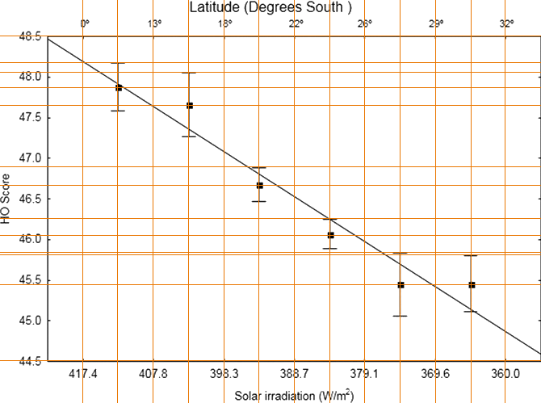
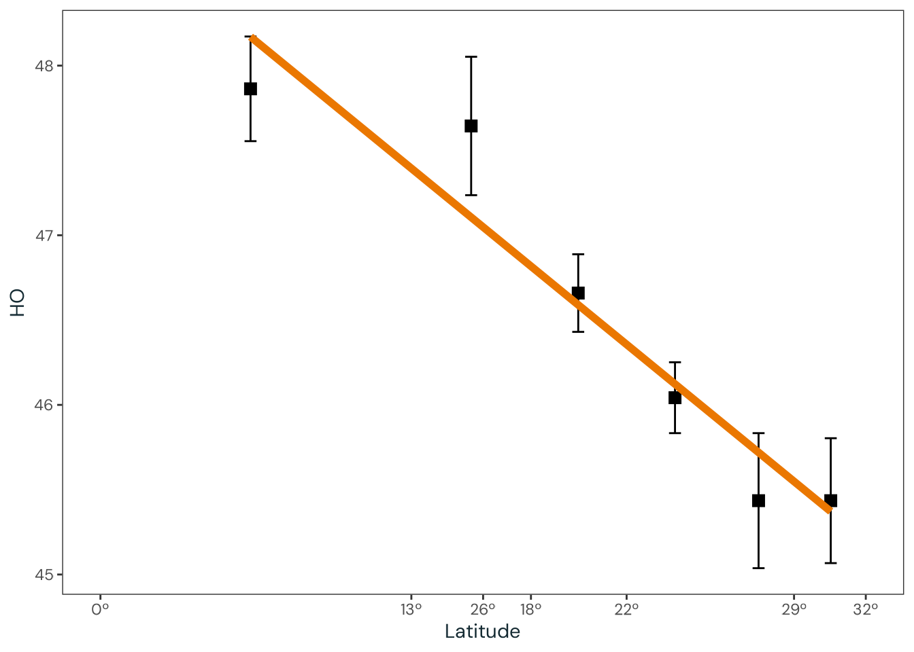
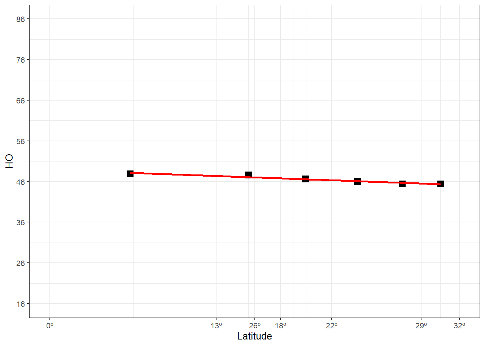

Appendix I — Critique of Leocadio-Miguel et al. (2017)
I.1 Overview
This document presents a som constructive critiques regarding Leocadio-Miguel et al. (2017) article, which this thesis respond to. It is made with the goal of add to the discussion of the latitude hypothesis and to to enhance understanding of the data depicted and highlight how it may lead to potential misinterpretations.
I.2 Inconsistent Data
We conducted a first regression of HO scores only on the covariates (age, longitude, and solar irradiation when the subjects filled the online questionnaire) and cofactors (sex, daylight saving time (DST), and season) (\(\text{R^{2}} = 0.05964\), \(\text{F}(8,12845) = 101.8\), \(p < 2.2e-16\))
The \(\text{F}\)-test indicates \(8\) predictors, yet only \(6\) are mentioned in the text. This discrepancy is not clarified, leaving uncertainty about the additional predictors included in the model.
[continuing from the last quote] … and a second regression including the annual average solar irradiation, sunrise time, sunset time and daylight duration in March equinox, June, and December solstices for each volunteer (\(\text{R^{2}} = 0.06667\), \(\text{F}(27,12853) = 33.8\), \(p < 2.2e-16\)).
In this case, the \(\text{F}\)-test indicates \(27\) predictors. However, adding the \(8\) predictors from the first regression to the \(10\) newly mentioned variables yields a total of \(18\) predictors, not \(27\). This inconsistency is not addressed in the text.
Testing for nested models, we obtained a significant reduction of residual sum of squares (\(\text{F}(2,12884) = 31.983\), \(p = 1.395e-14\)), […]
The degrees of freedom difference (\(df = 2\)) suggests that the two previously described models were not directly compared in this nested test. This raises further questions about the models used, as the discrepancy is not explained.
I.3 Statistic Ritual – Lack of Evidence
We also obtained an effect size estimate of Cohen’s \(f^{2} = (0.06352 - 0.05964) / (1 - 0.06352) = 0.004143174\)
The higher \(\text{R}^{2}\) value (\(0.06352\)) differs from the previously reported \(\text{R}^{2}\) (\(0.06667\)). This inconsistency is not justified, and the effect size is negligible. Latitude-related predictors explained only \(0.388\%\) of the variability (\((0.06352 - 0.05964) \times 100\)). Nonetheless, the authors interpreted this result as evidence of an association.
I.4 Model Issues
We tested the residuals of the second regression with Kolmogorov-Smirnov normality test and obtained a significant result (\(\text{D} = 0.42598\), \(p < 2.2e-16\)).
This result violates the assumptions of linear regression.
Objective assumption tests (e.g., Anderson–Darling test) is not advisable for larger samples, since they can be overly sensitive to minor deviations. Additionally, they might overlook visual patterns that are not captured by a single metric (Kozak & Piepho, 2018; Schucany & Ng, 2006; Shatz, 2024).
Nevertheless, the authors did not mention this in the text.
The irradiation (W/m2) data by latitude was acquired from the NASA website (http://aom.giss.nasa.gov). We retrieved monthly average data and calculated the annual mean for each latitude degree.
The type of irradiation (e.g., global, direct, or diffuse) was not specified, nor was it included in the supplementary materials. This omission is crucial, as different irradiation types can yield substantially different results.
[…] a second regression including the annual average solar irradiation, sunrise time, sunset time and daylight duration in March equinox, June, and December solstices for each volunteer
The inclusion of sunrise time, sunset time, and daylight duration (sunset - sunrise) likely introduced multicollinearity due to their inherent correlation. The study does not acknowledge or address this potential issue.
I.5 Misleading Visualizations
The Figure 2 shown in Leocadio-Miguel et al. (2017) provides a good example of how data can be misleading. I remember seeing this figure many times in presentations in the field chronobiology, but without a proper care of understanding what it was showing.
To understand this figure, one must first understand the escala it trying to represent. In Leocadio-Miguel et al. (2017), the authors used the Horne & Östberg (HO) chronotype scale (Horne & Östberg, 1976). This scale, one of the first developed to assess chronotype, is a self-report questionnaire designed to determine an individual’s preferred time of day for activities such as waking up, going to bed, and moment of peak performance. The HO scale consists of 19 items, with a total score ranging from 16 to 86. Lower scores indicate greater evening orientation, while higher scores reflect stronger morning orientation.
Code
Source: Adapted from Horne & Östberg (1976).
I.6 The Figure
One of the key issues with the data presented in Leocadio-Miguel et al. (2017) is that it relies on negligible associations, yet the authors present them in a way that suggests a strong effect. The article’s Figure 2 Figure I.2 illustrates this. At first glance, it appears to show a good fit and a strong relationship between latitude and the chronotype proxy (in this case, the HO score). However, a closer analysis reveals that it is a clear example of the Y-axis illusion.

Source: Reproduction from Leocadio-Miguel et al. (2017).}
In the following sections, I reproduce the data from the figure to provide a clearer representation of the actual relationship reported by the authors.
I.7 Latitude Estimation (Upper x-Axis)
As shown in Figure I.3, the latitude does not follow a fixed scale. Instead, it is referenced relative to the second x-axis (solar irradiation). However, it is possible to estimate the latitude values reasonably well by measuring the pixel distances between points on the figure.

Source: Adaptation from Leocadio-Miguel et al. (2017).
Interval distances
- \(0\text{-}13\): \(87\) pixels. \(87 / 13\): 1 point \(\approx 6.692308\) pixels.
- \(13\text{-}18\): \(88\) pixels. \(88 / (18 - 13)\): \(1\) point \(= 17.6\) pixels.
- \(18\text{-}22\): \(87\) pixels. \(87 / (22 - 18)\): \(1\) point \(= 21.75\) pixels.
- \(22\text{-}26\): \(87\) pixels. \(87 / (26 - 22)\): \(1\) point \(= 21.75\) pixels.
- \(26\text{-}29\): \(88\) pixels. \(88 / (29 - 26)\): \(1\) point \(\approx 29.333\) pixels.
- \(29\text{-}32\): \(86\) pixels. \(86 / (32 - 29)\): \(1\) point \(\approx 28.667\) pixels.
Estimation
- point: \(0\) to point: \(42\) pixels. Estimation: \(42 / (87 / 13) \approx 6.275862\).
- point: \(13\) to point: \(44\) pixels. Estimation: \(13 + (44 / (88 / (18 - 13))) = 15.5\).
- point: \(18\) to point: \(43\) pixels. Estimation: \(18 + (43 / (87 / (22 - 18))) \approx 19.97701\).
- point: \(22\) to point: \(44\) pixels. Estimation: \(22 + (44 / (87 / (26 - 22))) \approx 24.02299\).
- point: \(26\) to point: \(44\) pixels. Estimation: \(26 + (44 / (87 / (29 - 26))) \approx 27.51724\).
- point: \(29\) to point: \(44\) pixels. Estimation: \(29 + (44 / (86 / (32 - 29))) \approx 30.53488\).
I.8 HO Estimation (y-Axis)
The HO value scale is fixed, allowing the values to be accurately determined by measuring the pixel distances.
Pixel/point
- \(44.5\text{-}48.5\): \(402\) pixels. \(402 / (48.5 - 44.5)\): \(1\) point \(= 100.5\) pixels.
Estimation
- point: \(44.5\) to point: \(338\) pixels. Estimation: \(44.5 + (338 / (402 / (48.5 - 44.5))) \approx 47.86318\).
- point: \(44.5\) to point: \(316\) pixels. Estimation: \(44.5 + (316 / (402 / (48.5 - 44.5))) \approx 47.64428\).
- point: \(44.5\) to point: \(217\) pixels. Estimation: \(44.5 + (217 / (402 / (48.5 - 44.5))) \approx 46.6592\).
- point: \(44.5\) to point: \(155\) pixels. Estimation: \(44.5 + (155 / (402 / (48.5 - 44.5))) \approx 46.04229\).
- point: \(44.5\) to point: \(94\) pixels. Estimation: \(44.5 + (94 / (402 / (48.5 - 44.5))) \approx 45.43532\).
- point: \(44.5\) to point: \(94\) pixels. Estimation: \(44.5 + (94 / (402 / (48.5 - 44.5))) \approx 45.43532\).
I.9 Standard error estimation (y-axis)
The standard error (SE) is displayed on the Y-axis, which has a fixed scale. Therefore, the values can be accurately determined by measuring the pixel distances.
Pixel/point
- \(44.5\text{-}48.5\): \(402\) pixels. \(402 / (48.5 - 44.5)\): \(1\) point \(= 100.5\) pixels.
Estimation
- point SE: \(44.5\) to upper SE: \(369\) pixels. Estimation: \(44.5 + (369 / (402 / (48.5 - 44.5))) \approx 48.17164\).
- point SE: \(44.5\) to upper SE: \(357\) pixels. Estimation: \(44.5 + (357 / (402 / (48.5 - 44.5))) \approx 48.05224\).
- point SE: \(44.5\) to upper SE: \(240\) pixels. Estimation: \(44.5 + (240 / (402 / (48.5 - 44.5))) \approx 46.88806\)
- point SE: \(44.5\) to upper SE: \(176\) pixels. Estimation: \(44.5 + (176 / (402 / (48.5 - 44.5))) \approx 46.25124\)
- point SE: \(44.5\) to upper SE: \(134\) pixels. Estimation: \(44.5 + (134 / (402 / (48.5 - 44.5))) \approx 45.83333\)
- point SE: \(44.5\) to upper SE: \(131\) pixels. Estimation: \(44.5 + (131 / (402 / (48.5 - 44.5))) \approx 45.80348\)
I.10 The Extracted Data
By following the processes described above, we can obtained a reliable approximation of the data, as shown below.
Code
data <-
dplyr::tibble(
ho = c(
44.5 + (338 / (402 / (48.5 - 44.5))),
44.5 + (316 / (402 / (48.5 - 44.5))),
44.5 + (217 / (402 / (48.5 - 44.5))),
44.5 + (155 / (402 / (48.5 - 44.5))),
44.5 + (94 / (402 / (48.5 - 44.5))),
44.5 + (94 / (402 / (48.5 - 44.5)))
),
latitude = c(
42 / (87 / 13),
13 + (44 / (88 / (18 - 13))),
18 + (43 / (87 / (22 - 18))),
22 + (44 / (87 / (26 - 22))),
26 + (44 / (87 / (29 - 26))),
29 + (44 / (86 / (32 - 29)))
)
) |>
dplyr::mutate(
se_upper = c(
44.5 + (369 / (402 / (48.5 - 44.5))),
44.5 + (357 / (402 / (48.5 - 44.5))),
44.5 + (240 / (402 / (48.5 - 44.5))),
44.5 + (176 / (402 / (48.5 - 44.5))),
44.5 + (134 / (402 / (48.5 - 44.5))),
44.5 + (131 / (402 / (48.5 - 44.5)))
),
se = se_upper - ho
)
dataI.11 Ploting the Data
First, let’s examine the data in a format similar to what is shown in the Leocadio-Miguel et al. (2017) figure.
Note that here, the x-axis follows a fixed scale, which is crucial to avoid any distortions.
Code
data |>
ggplot2::ggplot(
ggplot2::aes(x = latitude, y = ho)
) +
ggplot2::geom_point(shape = 15, size = 3) +
ggplot2::geom_errorbar(
ggplot2::aes(
x = latitude,
y = ho,
ymin = ho - se,
ymax= ho + se
),
data = data,
show.legend = FALSE,
inherit.aes = FALSE,
width = 0.5,
linewidth = 0.5
) +
ggplot2::geom_smooth(
method = "lm",
formula = y ~ x,
se = FALSE,
color = "red",
linewidth = 2
) +
ggplot2::scale_x_continuous(
breaks = c(0, 13, 18, 22, 16, 29, 32),
labels = c("0º", "13º", "18º", "22º", "26º", "29º", "32º"),
limits = c(0, 32)
) +
ggplot2::labs(
x = "Latitude",
y = "HO"
) +
ggplot2::theme(text = ggplot2::element_text(size = env_vars$base_size))
Source: Created by the author based on data from Leocadio-Miguel et al. (2017).
Now, it is possible to adjust the y-axis to reflect the minimum and maximum values of the HO scale.
Code
data |>
ggplot2::ggplot(
ggplot2::aes(x = latitude, y = ho)
) +
ggplot2::geom_point(shape = 15, size = 3) +
ggplot2::geom_errorbar(
ggplot2::aes(
x = latitude,
y = ho,
ymin = ho - se,
ymax= ho + se
),
data = data,
show.legend = FALSE,
inherit.aes = FALSE,
width = 0.5,
linewidth = 0.5
) +
ggplot2::geom_smooth(
method = "lm",
formula = y ~ x,
se = FALSE,
color = "red"
) +
ggplot2::scale_x_continuous(
breaks = c(0, 13, 18, 22, 16, 29, 32),
labels = c("0º", "13º", "18º", "22º", "26º", "29º", "32º"),
limits = c(0, 32)
) +
ggplot2::scale_y_continuous(
breaks = seq(16, 86, 10),
limits = c(16, 86)
) +
ggplot2::labs(
x = "Latitude",
y = "HO"
) +
ggplot2::theme(text = ggplot2::element_text(size = env_vars$base_size))
Source: Created by the author based on data from Leocadio-Miguel et al. (2017).
With Figure I.5, it becomes clear that the data provided by the authors does not demonstrate a relevant effect size.